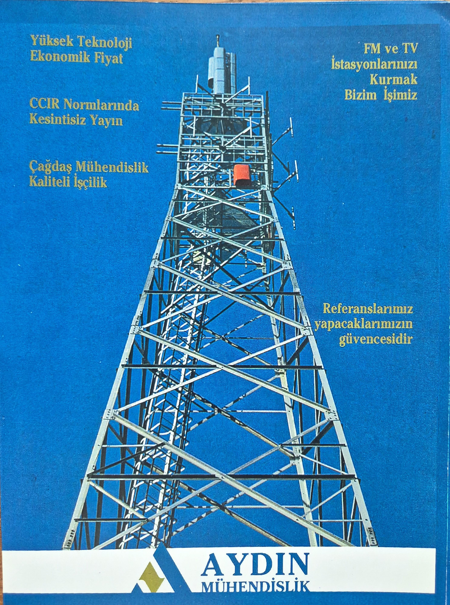
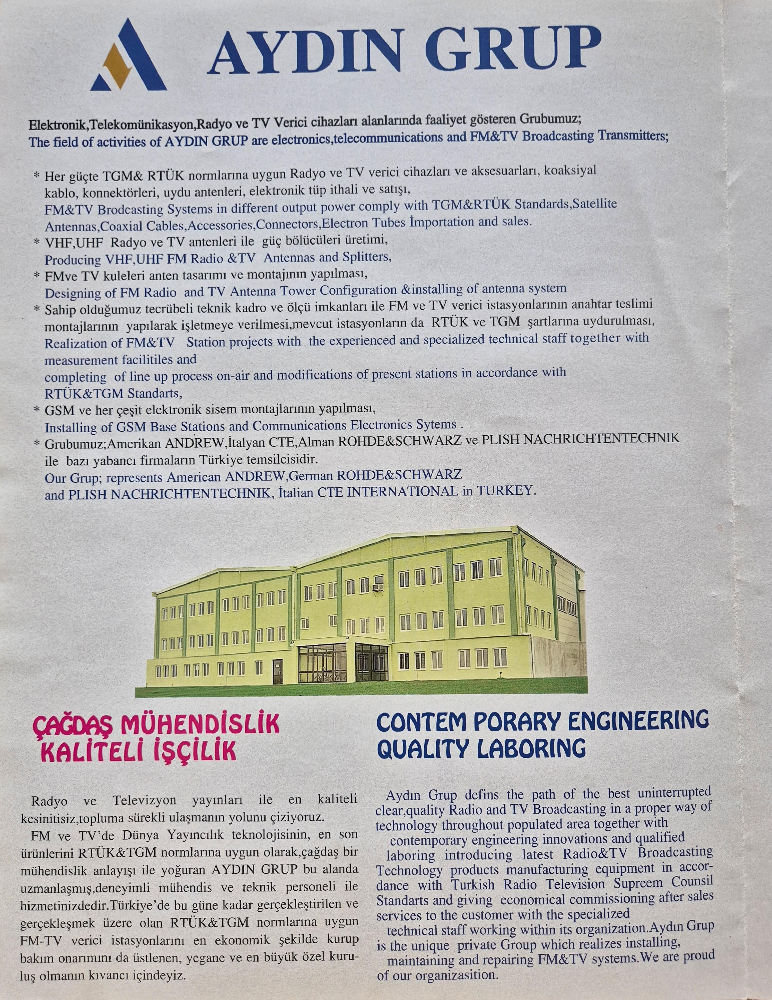
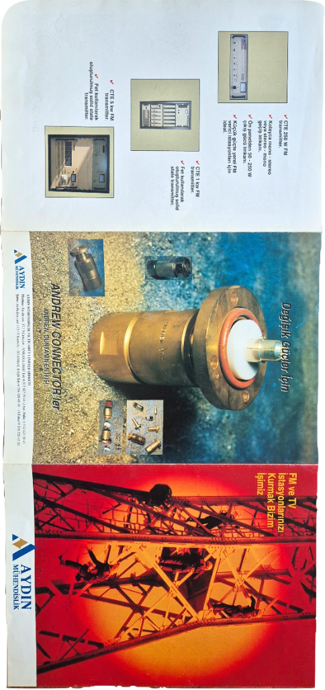
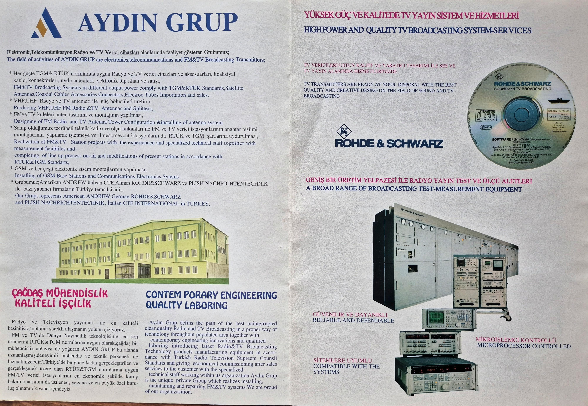
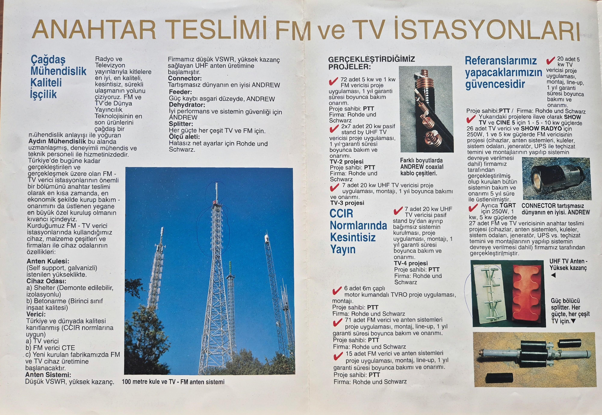
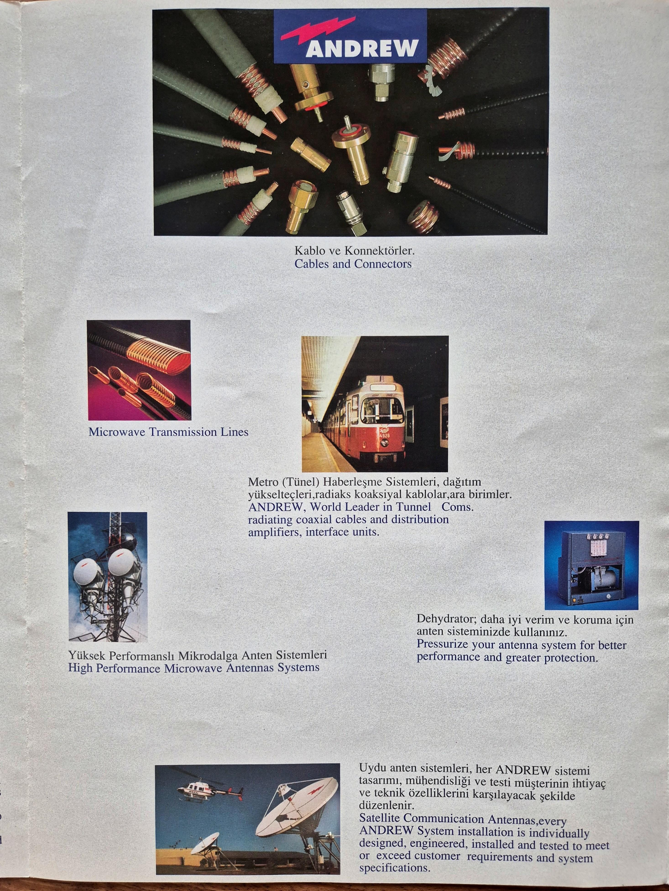
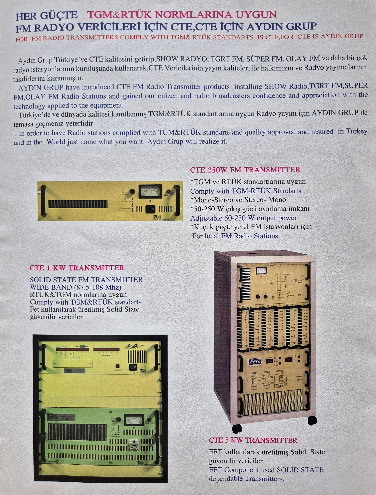
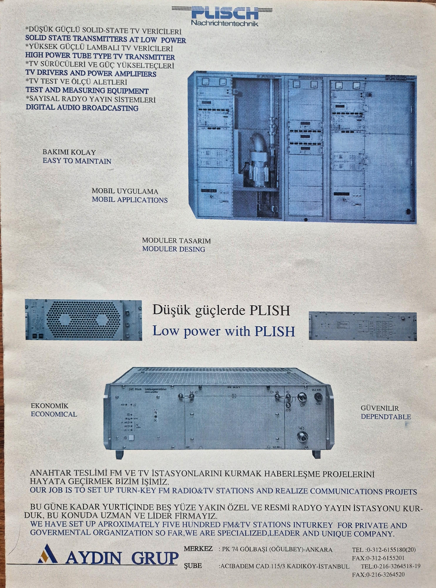
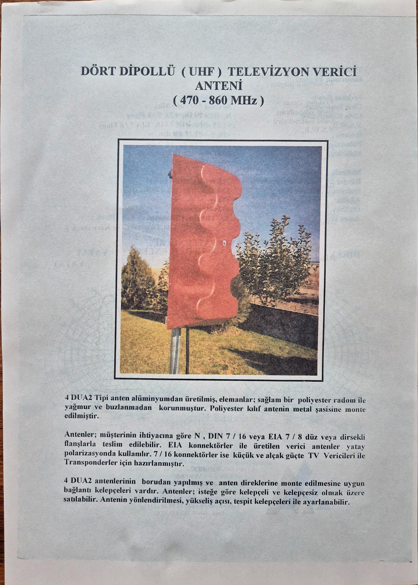
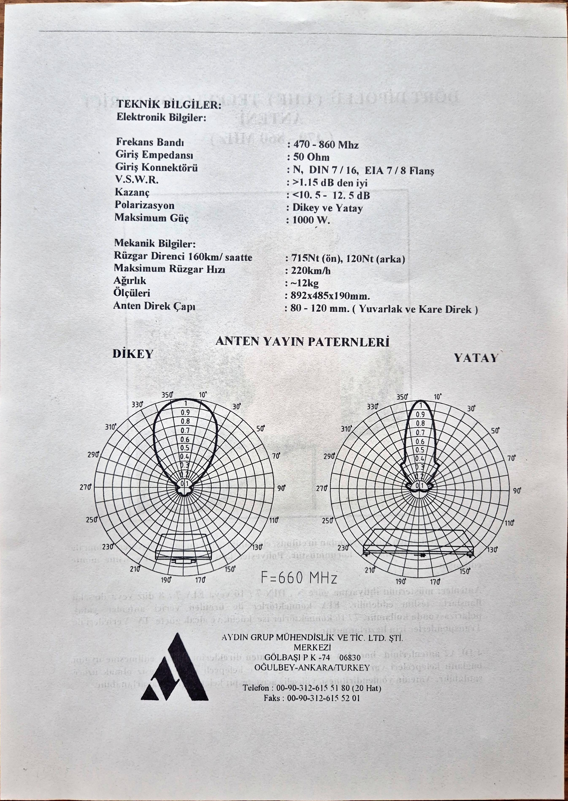

Özgün Mühendislik — 4 DUA2 UHF Verici Anteni / Proprietary Engineering — 4 DUA2 UHF Antenna
The firm's principal in-house engineered product was a four-dipole UHF television transmitter antenna covering the full broadcast spectrum (470–860 MHz, Channels 21–69). Aluminum radiator elements were enclosed in a polyester radome protecting against rain and ice loading; the assembly mounted directly to round or square steel masts via integrated clamps. Connector options were selectable per customer requirement, with horizontal or vertical polarization configurations available.

F = 660 MHz — vertical / horizontal polarization.Electronic
Mechanical
Referanslar / References
| Project | Description | Client | Equipment |
|---|---|---|---|
| Show TV | National private TV network | Turn-key | R&S / PLISCH |
| Cine 5 | National private TV network | Turn-key | R&S / PLISCH |
| TGRT | National private TV network | Turn-key | R&S / PLISCH |
| Show Radyo | FM radio network | Turn-key | CTE |
| TGRT FM | FM radio network | Turn-key | CTE |
| TV-4 project | 7 × 20 kW UHF TV transmitters · 1-yr maintenance | PTT | R&S |
| PTT FM fleet | 86 units (71 + 15) · multi-year maintenance | PTT | R&S |
| PTT TVRO | 6 × 6 m satellite antennas | PTT | — |
| Çamlıca | 100 m self-supporting tower + TV/FM antenna system | Structural | — |
| TGART | 27 × FM/TV units (250 W · 8 kW EIA 7/8 · other) | TGART | — |
| Various | ≈ 72 × 1 kW TX installations | — | — |
| Andrew line | Coaxial transmission supply across project scales | Various | Andrew |
| ≈ 500 FM and TV broadcasting stations deployed across Turkey · governmental and private operators · primary-source aggregate figure | |||
Birincil Kaynak Arşivi / Primary Source Archive
Original technical brochure plates, c. late 1990s, bilingual Turkish / English. The corporate record below precedes the firm's digital presence and is reproduced here as the primary documentary source.

Pl. 01Brochure cover — Aydın Mühendislik wordmark over steel tower
Pl. 02Cover variant — corporate headquarters facade
Pl. 03Inside montage — R&S equipment, vacuum tube, tower
Pl. 04Company profile spread — scope statement + R&S systems
Pl. 05Turn-key FM / TV station reference page + project ledger
Pl. 06Andrew — cables, microwave, tunnel comms, satellite antennas
Pl. 07CTE — 250 W / 1 kW / 5 kW FM transmitters
Pl. 08PLISCH — TV transmitters + corporate address block
Pl. 094 DUA2 UHF antenna — description and field photo
Pl. 104 DUA2 specification sheet + polar pattern